† Equal contribution · * Corresponding author
We introduce Pion, a spectrum-preserving optimizer for large language model (LLM) training based on orthogonal equivalence transformation. Unlike additive optimizers such as Adam and Muon, Pion updates each weight matrix through left and right orthogonal transformations, preserving its singular values throughout training. This modulates the geometry of weights while keeping spectral norm fixed. We derive the update rule, study design choices (momentum, alternation, exponential map approximations), and analyze convergence. Empirically, Pion is a stable and competitive alternative for LLM pretraining and finetuning—including challenging settings without normalization and at extreme depth.
Takeaways
POET learns \( \mathbf{W}_{RP} = \mathbf{R}\mathbf{W}_0\mathbf{P} \) with fixed random \( \mathbf{W}_0 \). Pion applies coupled orthogonal actions to the current weights without fixing a base matrix—preserving singular values while simplifying training dynamics.
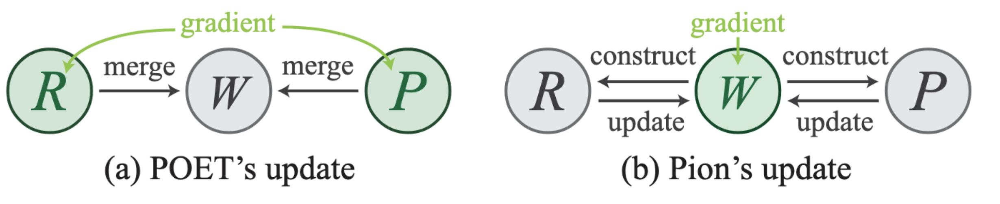
Comparison of POET’s reparameterized update and Pion’s direct spectrum-preserving update (green: learnable quantities).
Lie algebra · Transport · Alternating sides · exp(·) approximation
With gradient \( \mathbf{G}_t \), skew projections and two-sided orthogonal update:
Lie-algebra momentum, ambient momentum, and parallel transport of momentum onto the tangent space at the new iterate—the transported and Lie variants track optimization geometry more faithfully.
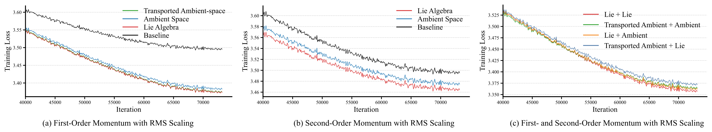
Training loss comparing momentum designs; Lie-type accumulation tends to converge faster.
Applying only one of the two orthogonal factors per step cuts cost while staying on the same design principles; final loss can match bilateral training within a small margin.
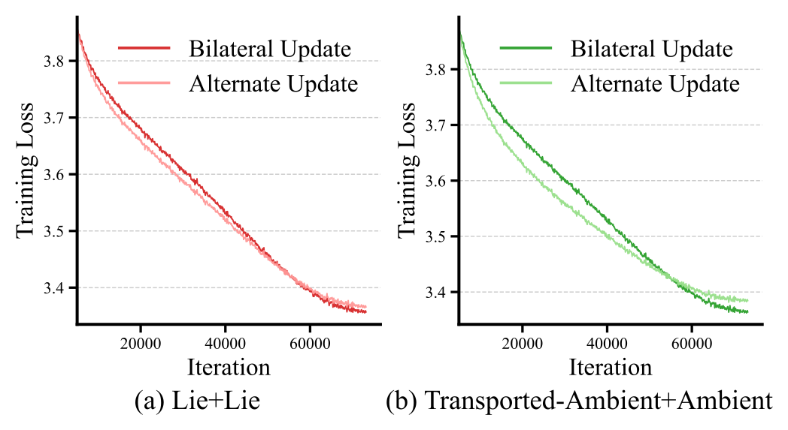
Bilateral vs. alternate updates for representative Pion momentum configurations.
Matrix exponentials are approximated (e.g. truncated series or Cayley-type maps). A low-order expansion suffices because error does not compound the same way as in generic manifold integrators—see paper for analysis.
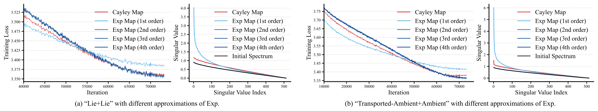
Loss and singular-value behavior under different \( \exp \) approximations.
Stable pretrain · No-norm & depth · μP · Benchmarks · SFT · RLVR
Long-horizon C4 pretraining with matched optimizers: Pion tracks diagnostic quantities more evenly than AdamW/Muon (e.g. max attention logit, activation norms).
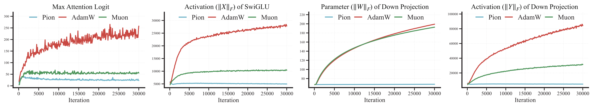
Dynamics of stability-related quantities during pretraining; Pion keeps trajectories comparatively flat.
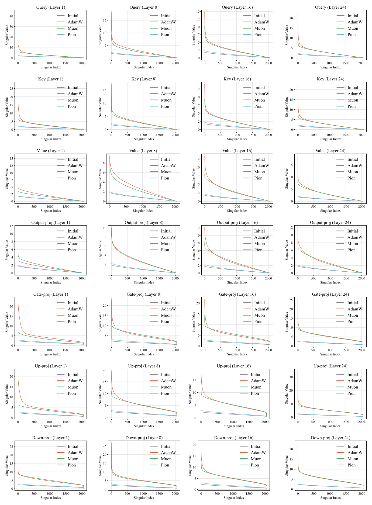
Evolution of weight singular-value spectra—Pion preserves the initial spectrum shape throughout training.
Removing normalization layers from a 60M LLaMA: AdamW and Muon eventually overflow; Pion remains stable over the full token budget.
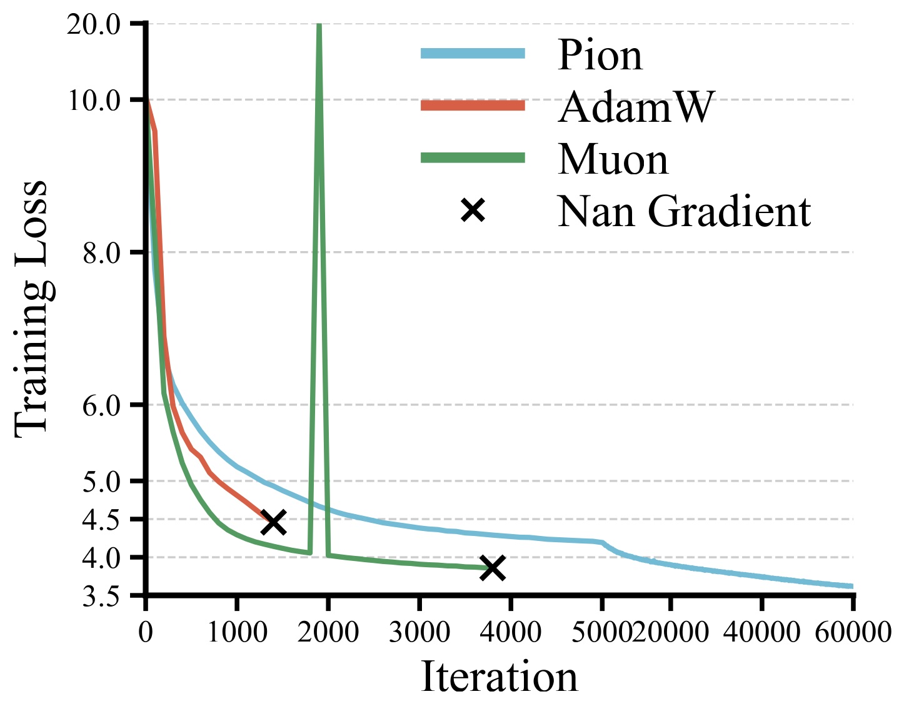
Training loss when all normalization layers are removed.
Scaling depth stresses optimization; Pion exhibits smoother loss bands and competitive convergence.
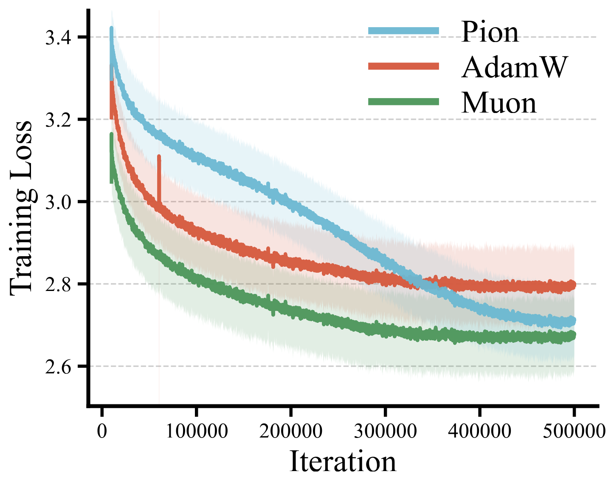
Smoothed training loss for very deep models; shaded band reflects local loss variability.
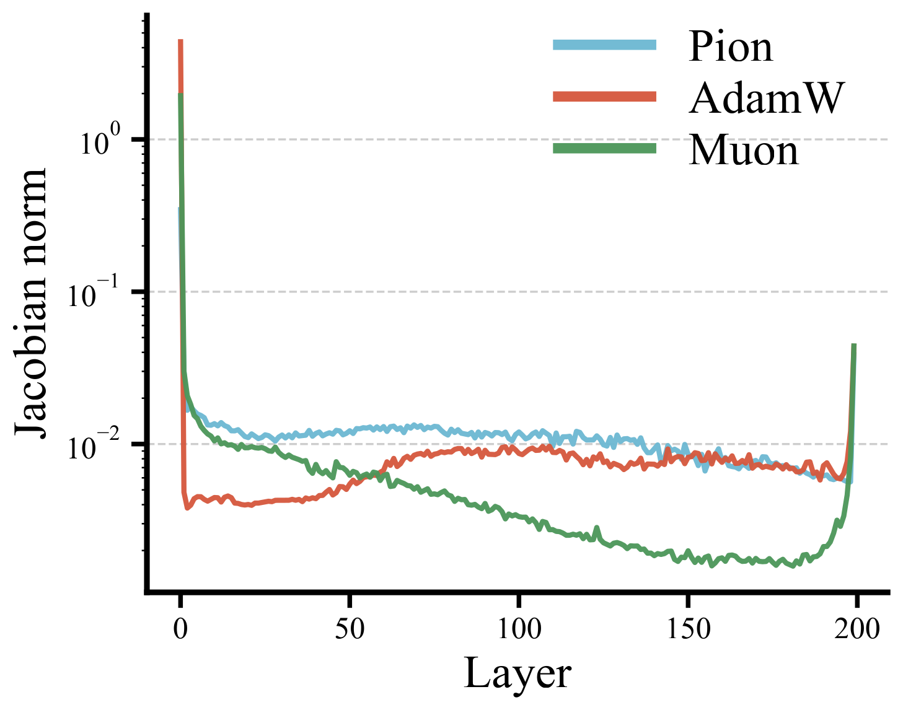
Layer-wise Jacobian deviation from identity (\(\lVert J_\ell - I \rVert_F\)) in DeepNet; Pion maintains stronger expressivity in deeper layers.
Forward spectrum from weights · update scaling via Lie factors
Pion fixes weight singular values, so forward spectral scaling is built in. Controlling norms of \( \mathbf{G}^{\mathrm{in}}, \mathbf{G}^{\mathrm{out}} \) (normalization or orthogonalization) targets the update side of μP. Experiments on Llama- and Qwen-style widths show stable learning-rate transfer across scales when using a μP-compatible Pion variant.
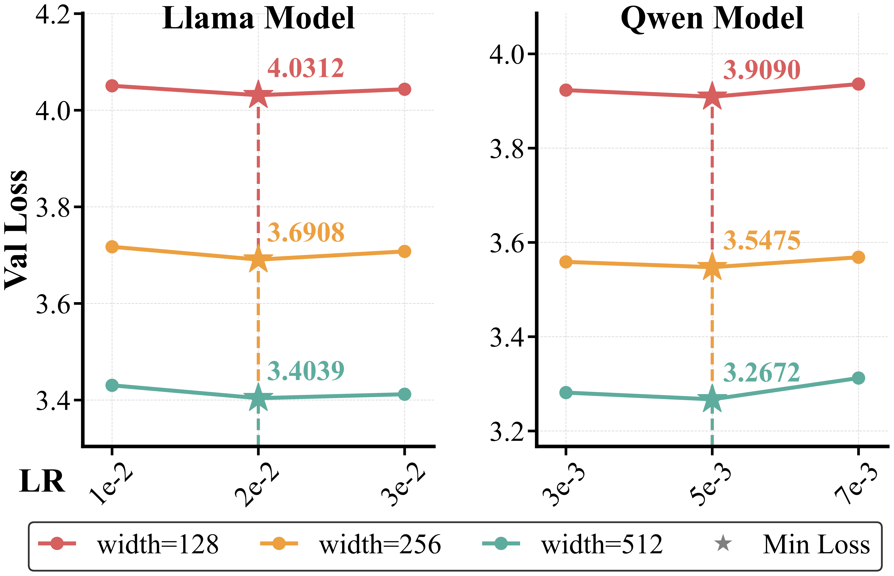
μP-style hyperparameter transfer across model widths (main text).
LLaMA-1.3B, ~54B tokens, T5 tokenizer, seq. 256. Pion reports the strongest average on the paper’s evaluation suite; validation loss is competitive with Muon and better than AdamW.
| Method | ARC-C | ARC-E | BoolQ | Hella. | PIQA | SciQ | TriviaQA | Wino. | Avg | Val Loss |
|---|---|---|---|---|---|---|---|---|---|---|
| AdamW | 25.94 | 45.96 | 46.30 | 45.10 | 71.27 | 70.80 | 1.06 | 51.46 | 44.74 | 2.7700 |
| Muon | 25.34 | 47.94 | 51.56 | 46.70 | 72.20 | 71.60 | 1.64 | 53.75 | 46.34 | 2.7225 |
| Pion | 26.79 | 49.41 | 57.58 | 47.34 | 71.27 | 73.40 | 2.17 | 53.59 | 47.69 | 2.7350 |
Full-parameter SFT with LLaMA-Factory on MetaMathQA and Magicoder-Evol-Instruct-110K. ID = in-domain (GSM8K for math, HumanEval for code); OOD = out-of-domain generalization. Bold = best among optimizers per column (excluding base).
| Method | Qwen2.5-1.5B | Llama3.2-3B | ||||||
|---|---|---|---|---|---|---|---|---|
| Math | Code | Math | Code | |||||
| ID (%) | OOD (%) | ID (%) | OOD (%) | ID (%) | OOD (%) | ID (%) | OOD (%) | |
| Base | 59.81 | 64.83 | 35.98 | 63.99 | 25.47 | 67.59 | 26.22 | 53.08 |
| AdamW | 65.88 | 62.13 | 51.83 | 62.64 | 59.87 | 60.86 | 46.95 | 58.64 |
| Muon | 65.27 | 61.22 | 50.00 | 62.41 | 57.77 | 61.20 | 46.34 | 58.88 |
| Pion | 65.76 | 62.16 | 53.05 | 63.21 | 58.83 | 60.44 | 47.19 | 59.74 |
All numbers in % (accuracy). ID = in-domain, OOD = out-of-domain; bold = best per column among optimizers (excluding Base). Gray row = Pion. Table 2 in the paper.
GRPO training with VeRL on DeepMath; evaluation on AIME24/25, AMC23, Minerva Math, and OlympiadBench. avg@K = mean accuracy over K samples per problem. Bold = best among AdamW, Muon, and Pion per column (excluding base).
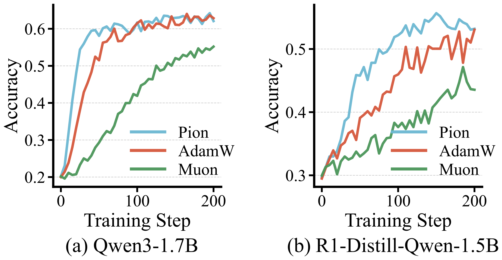
RLVR training dynamics (GRPO with VeRL on DeepMath); shaded bands indicate variability across runs where applicable.
| Method | Qwen3-1.7B | DeepSeek-R1-Distill-Qwen-1.5B | ||||||||||
|---|---|---|---|---|---|---|---|---|---|---|---|---|
| AIME24 avg@32 |
AIME25 avg@32 |
AMC23 avg@8 |
Minerva avg@4 |
Olymp. avg@8 |
Avg | AIME24 avg@32 |
AIME25 avg@32 |
AMC23 avg@8 |
Minerva avg@4 |
Olymp. avg@8 |
Avg | |
| Base | 4.06 | 10.10 | 30.27 | 16.27 | 23.67 | 16.87 | 20.52 | 20.83 | 54.06 | 19.39 | 36.20 | 30.20 |
| AdamW | 22.71 | 20.94 | 58.43 | 25.91 | 46.09 | 34.82 | 25.42 | 23.94 | 62.65 | 23.16 | 44.69 | 35.97 |
| Muon | 20.42 | 19.27 | 54.22 | 24.08 | 42.41 | 32.08 | 29.06 | 23.33 | 66.72 | 22.89 | 44.61 | 37.32 |
| Pion | 25.42 | 21.98 | 59.94 | 26.84 | 46.43 | 36.12 | 30.00 | 24.38 | 66.87 | 23.90 | 46.43 | 38.32 |
Each benchmark is avg@K accuracy (%): AIME24 avg@32, AIME25 avg@32, AMC23 avg@8, Minerva Math avg@4, OlympiadBench avg@8. Avg = mean of the five. Table 3 in the paper. See PDF for training details (VeRL, POLARIS eval, decoding settings).
@techreport{pion2026,
title={Pion: A Spectrum-Preserving Optimizer via Orthogonal Equivalence Transformation},
author={Shi, Kexuan and Li, Hanxuan and Qiu, Zeju and Wen, Yandong and Buchholz, Simon and Liu, Weiyang},
institution={SphereLab Technical Report},
year={2026},
note={Available at https://spherelab.ai/pion}
}Complete references are listed in the PDF.